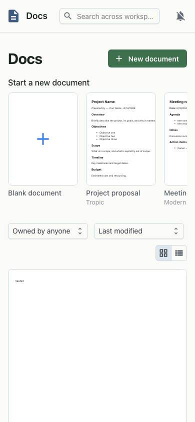

Overview
Docs is a full collaborative word processor. Several people can edit the same document at once — you see each other's live cursors and selections — backed by a conflict-free sync engine so nobody's work is lost. Start from a blank page or pick a starter template, then format, comment and share without leaving the workspace.

